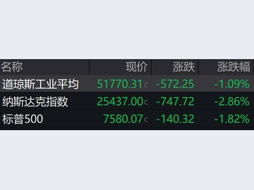
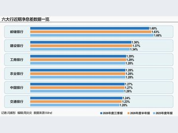
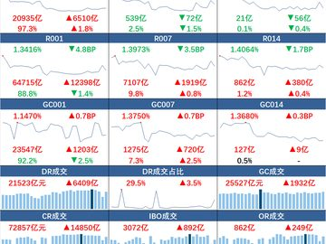

02
财经深一度丨主要政策利率“换锚”，隔夜逆回购利率缘何担重任
中国人民银行11月2日发布公告称，以固定利率、数量招标方式开展了5410亿元隔夜期逆回购操作，操作利率为1.25%。

新华社北京11月2日电（记者吴雨、任军）11月2日，中国人民银行会同金融监管总局、中国证监会等部门召开支持资本市场两项工具的座谈会…
中国人民银行11月2日发布公告称，以固定利率、数量招标方式开展了5410亿元隔夜期逆回购操作，操作利率为1.25%。
►►第一财经记者从业内获悉，11月2日上午9时左右，中国人民银行、中国证监会将召开会议，研究推动支持资本市场工具使用。

随着财报收官，头部城商行的分化比以往任何时候都更清晰。江苏银行、宁波银行、北京银行、上海银行讲出了四种不同的经营叙事：江苏是加速跑，宁波是修内功…
上市银行2026年三季报已经全部亮相，净息差走势成为观察银行经营成色的核心指标。中泰证券的数据显示，今年前三季度行业年化净息差为1.38%…
10月30日晚间，六大国有银行集体交出2026年三季度答卷，营收、利润双双保持稳健正增长。

本报讯 记者侯悦林 佟利德报道 11月1日，第六届“营口民营企业家日”如约而至，营口再次以城市之名向企业家群体致敬，书写城市与企业家双向奔赴新篇章。

为深入落实辽宁省工信厅“辽工贷”专项工作部署，持续引金融活水浇灌实体经济，助力工业企业纾困解难、提质增效、转型升级，近日…
新华社北京11月2日电 记者2日从中国铁建股份有限公司获悉，随着“金石号”硬岩隧道掘进机（TBM）顺利始发，由中国铁建大桥局承建的辽宁鞍山大孤山综合运输廊道…

国庆期间，每天天还未大亮，位于辽宁省海城市西柳镇的西柳中国商贸城已是灯火通明，商户盘点货品的吆喝声、物流司机核对货单的通话声此起彼伏，一派繁忙景象。
近日，中国人民银行发布公告，明确自11月2日起进一步优化短端利率调控机制：每个工作日开展隔夜逆回购操作，采用固定利率、数量招标，目前利率为1.25%；
2日资金面整体均衡。短期资金利率全线小幅回落，R001成交额逼近6.5万亿元，R007成交额占比升至近10%，DR007、DR014出现倒挂。
